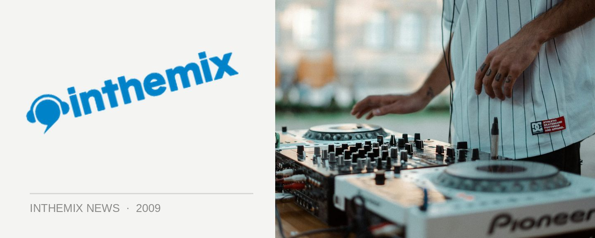

Entries open for Break the Bank 2009! Presented by ITM
The ‘Break The Bank’ DJ Competition got a whopping response last year when it debuted at one of Newtown’s favourite establishments, and the Bank Hotel are pleased to announce that it’s back for 2009. Entries are now open until October 2nd for all the budding DJs who’d like a shot at winning, with heats starting every Thursday from 17th September until October 22nd. The semi-final heats will take place over the following two weeks, before the grand final lands on 12th November.
The pool of winnings will be even bigger this year, with over $9000 up for grabs and the grand final winner again being rewarded with a contract with DJ agency The Groove Academy that’ll ensure them a kick start into paid gigs. Aspiring and amateur DJs who are ready to make a move into professional DJing are being targeted, and it’s open to everyone over 18 years who’s able to submit a 30-minute mixed CD.
Last year’s competition attracted over 150 entrants, with contestants from all over Sydney and even hailing as far away as Newcastle and Melbourne! The level of talent was found to be very high, with only the best making it to the heats, and some of Sydney’s top DJs were on hand to judge the contestants every week. If you want to be part of it, get working on your 30 minute mix!
‘Break the Bank’ returns to the Bank Hotel in Newtown next month, presented by ITM and entries are open now. Want a shot at taking home the prize? Download the application form now!